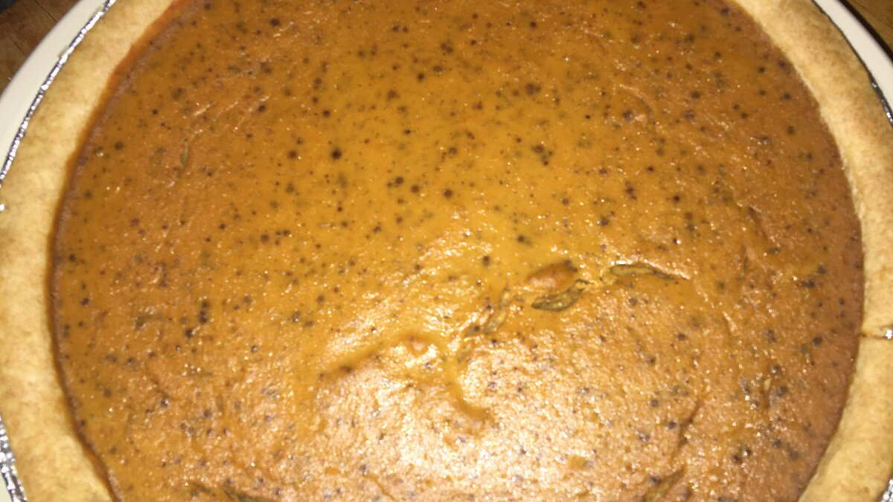

Pumpkin Pie Recipe

Whether you're hosting a festive party or a casual get-together with friends, our Famous Pumpkin Pie will make entertaining easy!
Ingredients
- 1 (9 inch) unbaked deep dish pie crust
- 3/4 cup white suger
- 1 tespoon ground cinnamon
- 1/2 teaspoon salt
- 1/2 teaspoon ground ginger
- 1/4 tespoon ground cloves
- 2 eggs
- 1 (15 ounce) can LIBBY'S 100% Pure Pumpkin
- 1 (12 fluid ounce) can NESTLE CARNATION Evaporated Milk
Steps
- Preheat oven to 425 degrees F.
- Combine sugar, salt, cinnamon, ginger and cloves in small bowl. Beat eggs lightly in large bowl. Stir in pumpkin and sugar-spice mixture. Gradually stir in evaporated milk. Pour into pie shell.
- Bake for 15 minutes. Reduce temperature to 350 degrees F.; bake for 40 to 50 minutes or until knife inserted near center comes out clean. Cool on wire rack for 2 hours. Serve immediately or refrigerate. (Do not freeze as this will cause the crust to separate from the filling.)